South America · Colombia · Medellín
Medellín, December 7 and 8, 2017
On December 7 and 8 I took two free walking tours in Medellín: the historic center on the 7th and Comuna 13 on the 8th. I slept in a hostel with "Pit" in its name, and I went on the first tour with an Israeli traveller I met there.
My conclusion up front: a free walking tour is an easy way to get your bearings on your first day in Medellín, and it costs only a tip. I do not remember how I booked, what I tipped or how large the groups were. As far as I remember it was a site called Guruwalk.
The times are my phone's clock, and Google Photos stores them in Colombian time (GMT-5). The boxes hold research I did in November 2026, each with a source and a date, so you can tell it apart from what I remember.
Where I slept
I am almost sure the hostel was Pitstop Guest House. I do not remember how many nights I stayed, what I paid, or how I got to Medellín from Cartagena. My photos from Cartagena end on December 4 and the next ones are from December 7.
What I found: old listings only, on Frommer's and TripExpert, which show that a hostel with this name existed in Medellín.
What I did not find: a current page, a price or any sign that it still operates. Do not book it from this chapter. Check a current booking site first.
December 7: the historic center
The day's first file is a video named for 16:00, of street dancers performing in the middle of a crowd on the walking tour. The clip has sound and moving people, so I am showing one frame, with every face blurred.
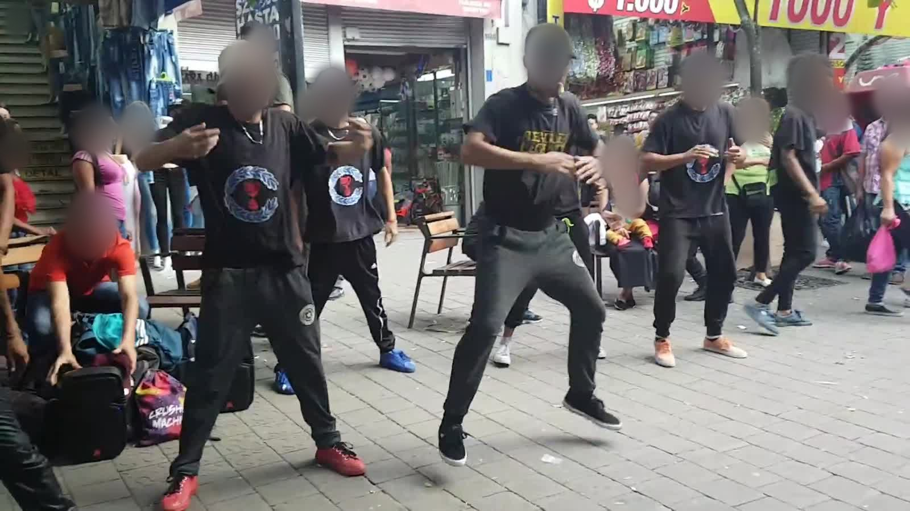
At 16:32 the tour passed a dark ornate building with a dome, with a row of narrow trees in front of it. I do not remember its name. The next photos are from 17:40 to 17:45 and look like Parque de Bolívar: the large brick cathedral with a fountain in front of it, the long nave inside with its hanging lamps, and the equestrian statue of Bolívar in the park. I took no notes at the time, so I am describing what the photos show.
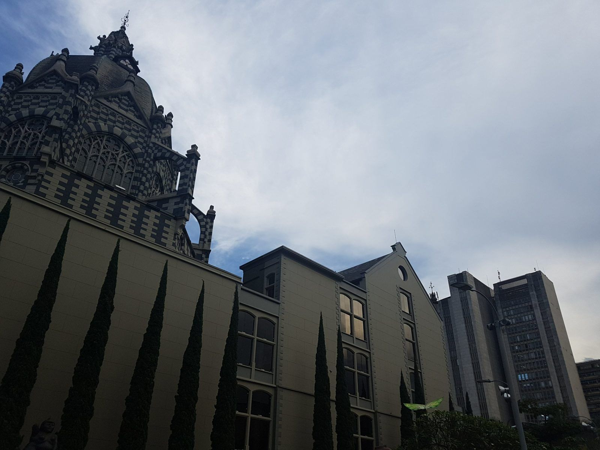
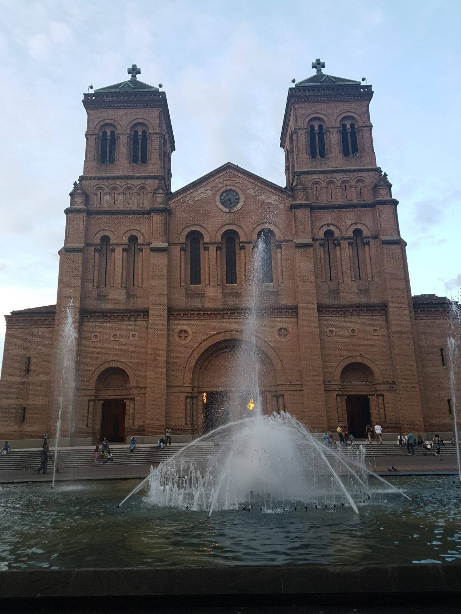
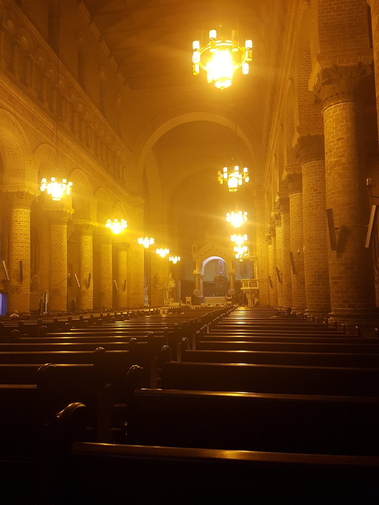
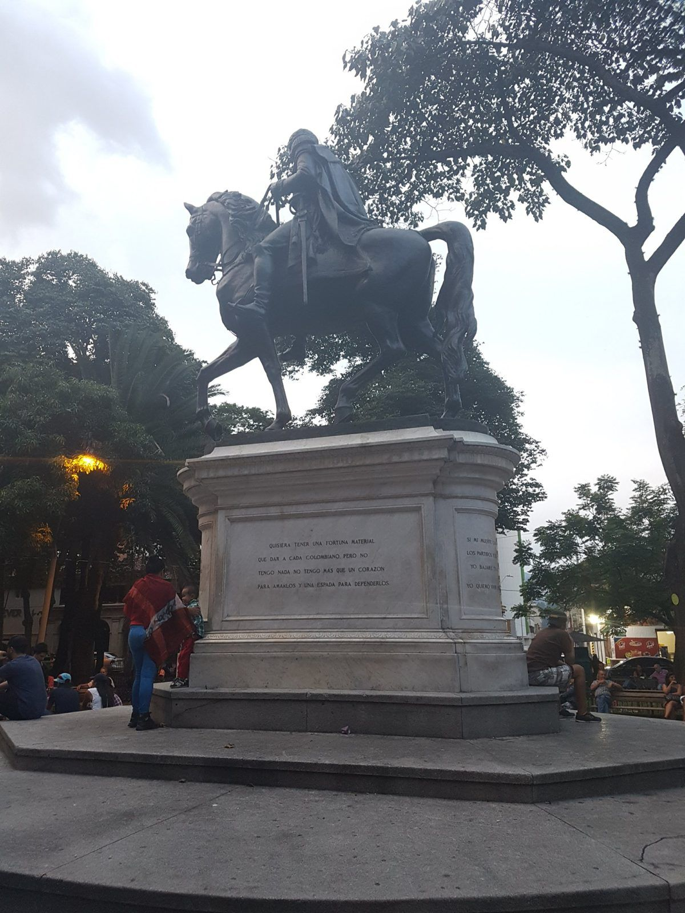
The last photo of the day is at 18:16, after dark. It shows a small square with lights, with two large rounded dark sculptures in the middle. Google Photos places it near Parque de Bolívar.
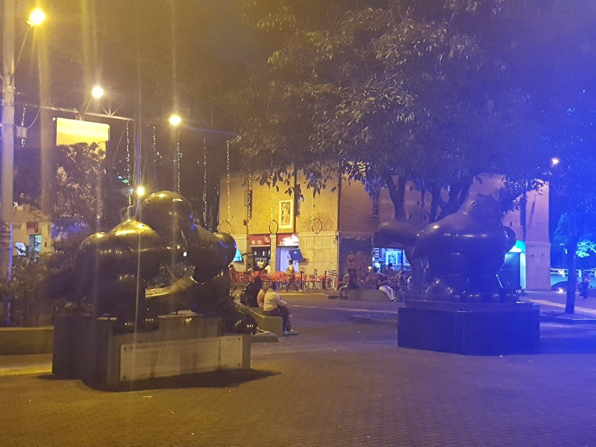
What I found: Guruwalk lists many free tours in Medellín. You book for free and tip at the end, and its FAQ suggests about 20,000 to 30,000 pesos per person. Downtown tours start at Plaza Botero or at Alpujarra station, most last 2.5 to 3.5 hours, and the page recommends booking ahead. The page was updated on 19 November 2026 (guruwalk.com).
What I did not find: which of these tours I took in 2017, since I did not note the company or the guide, and whether the page mentions Parque de Bolívar and the cathedral (it does not).
December 8: Comuna 13
On the morning of December 8 I took the second tour, to Comuna 13, a hillside neighbourhood in the west of the city that is known for its murals. Google Photos places the photos at "Tour Comuna 13, Medellín". They run from 11:24 to 12:37.
The first photos are views, taken from a viewpoint: a hillside of brick houses stepping down to the city, with the mountains behind it and clouds over everything.
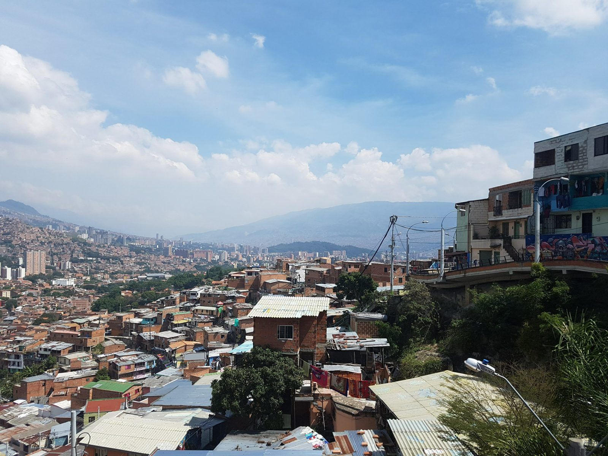
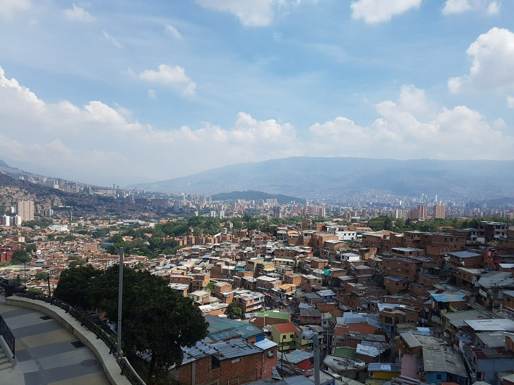
Then the murals. At 11:33 a wall with a large painted face wearing flowers, next to a flight of steps. At 11:40, a laughing face with big coloured glasses. At 12:02, a child winking with a magnifying glass, with words in Spanish about knowing and discovering. At 12:12, a pink-headed hummingbird on a deep blue background with white dots.
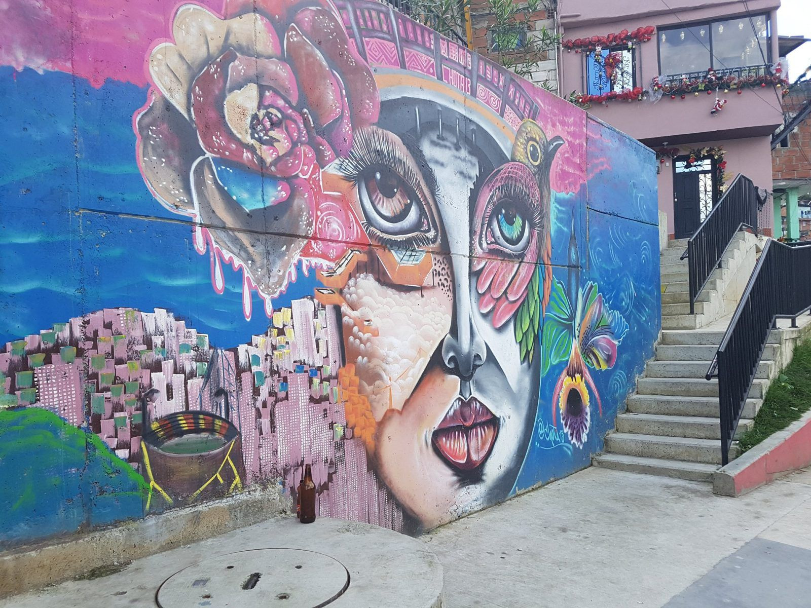
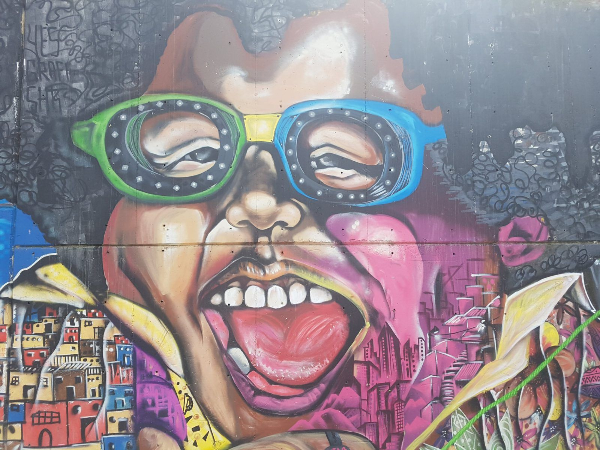
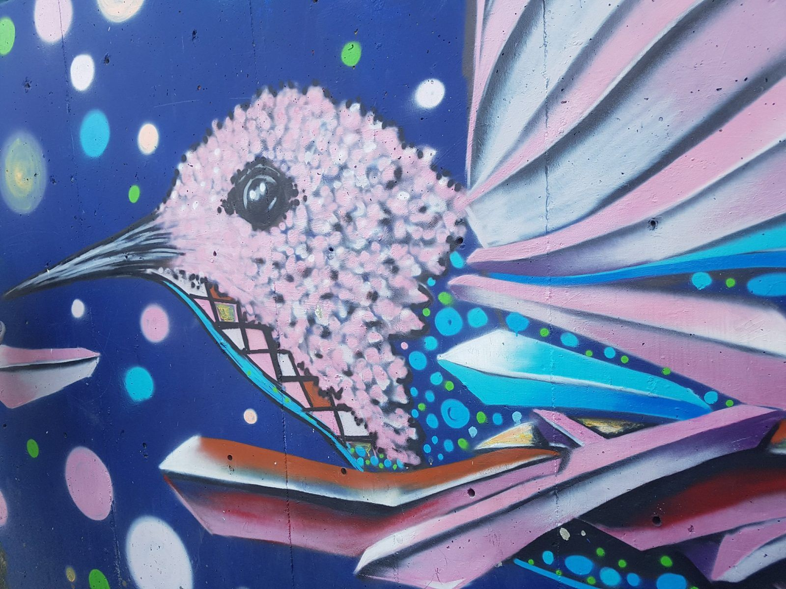
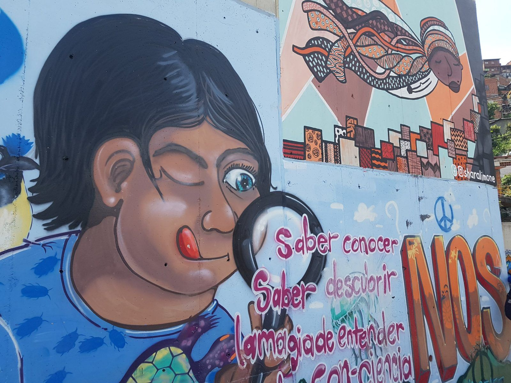
The last photo is at 12:37, of a small playground with three slides, orange, blue and yellow, in front of a long wall covered in graffiti. After the tour I left for Guatapé, and that is the next chapter.
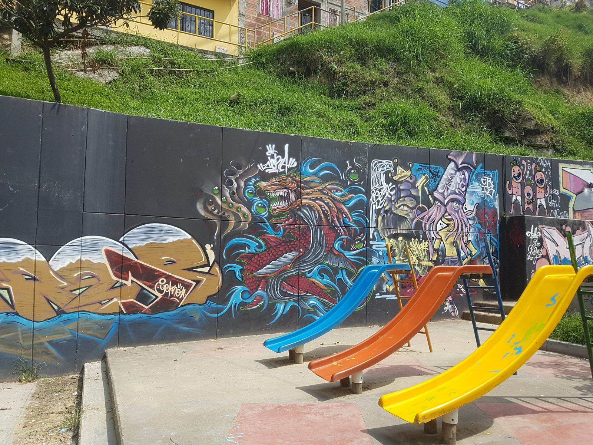
What I found: the Guruwalk page lists Comuna 13 tours that usually meet at San Javier station on Line B of the metro, last about 2.5 hours and start at several times in the morning and afternoon. It says these tours cover street art, the electric escalators and residents' stories, and that they fill up quickly (guruwalk.com).
What I did not find: an official source for access or safety rules, and which tour I took. I took no photos of the escalators.
What I do not remember
I do not remember how I reached Medellín, how many nights I stayed, what I paid at the hostel, which company ran the tours or what I tipped. I took no notes. The photos give the two days in order, and nothing more.